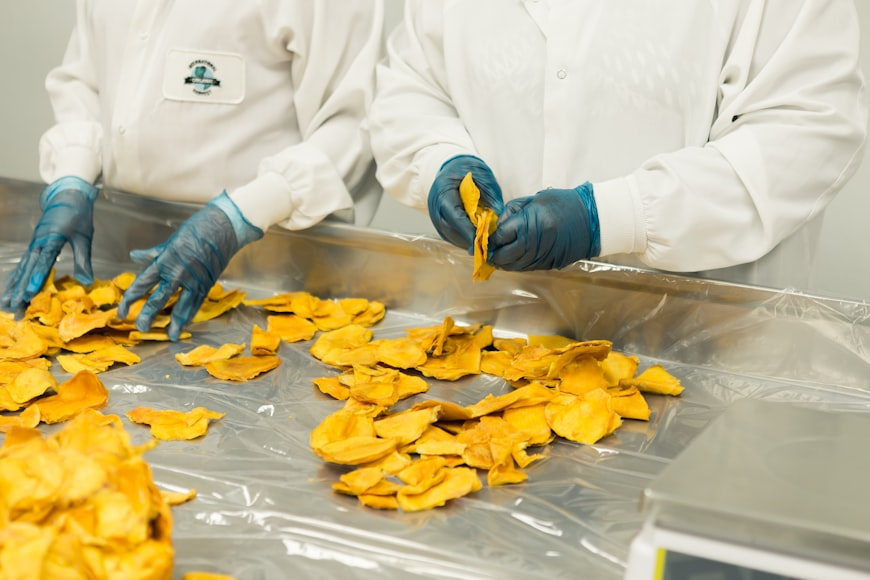

Daily/Weekly Projects
Every single day we work tirelessly to ensure that our customers at agogo are fully fed, hence we do delivery to markets and shops
- Bread production (e.g., sourdough, baguettes, ciabatta)
- Pastry production (e.g., croissants, danishes, muffins)
- Cake decorating for special orders (e.g., weddings, birthdays)
- Dessert preparation (e.g., cheesecakes, tarts, pies)
- Supplying local cafes and restaurants with baked goods

Seasonal/Holiday Projects
We also do memorable things for our customers whenever there is a come together occasion such as holidays and more.
- Christmas cookie production
- Valentine's Day heart-shaped desserts
- Easter bread and pastry specials
- Summer fruit tart production
- Traditional-themed treats

Advertisement and Promotional Projects
With our aim of going higher we have projects like these to reach more people and listen to there opinions
- Social media campaigns (e.g., Instagram, Facebook)
- In-store promotions (e.g., discounts, free samples)
- Loyalty programs
- Email newsletters with special offers
- Partnering with musicians, influencers or bloggers

Research and Development Projects
To ensure quality food, we do alot of research to protect our consumers from aliments that may come about because of products and also to produce some of the taste food.
- New recipe development
- Ingredient sourcing and testing
- Equipment upgrades or automation
- Food safety and quality control improvements
- Sustainability initiatives (e.g., reducing waste, eco-friendly packaging)

We also work hand in hand with our community to partake in the development of our nation Zambia.
- Charity baking events
- Fundraising campaigns
- Hosting baking classes or workshops
- Partnering with local schools or organizations
- Donating excess products to food banks or shelters
 Go back to top
Go back to top